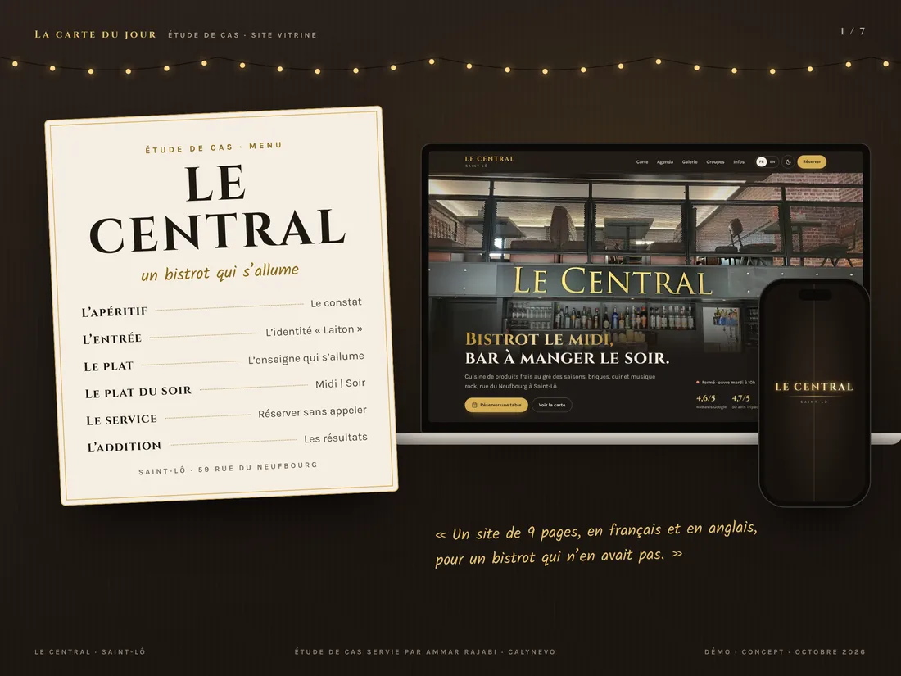
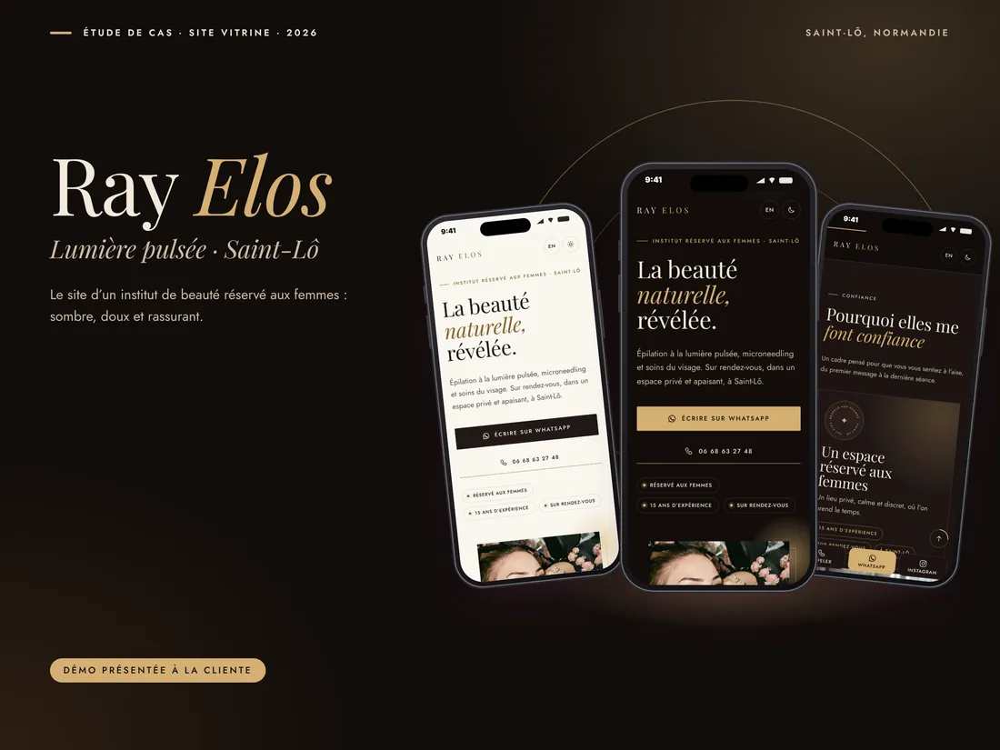
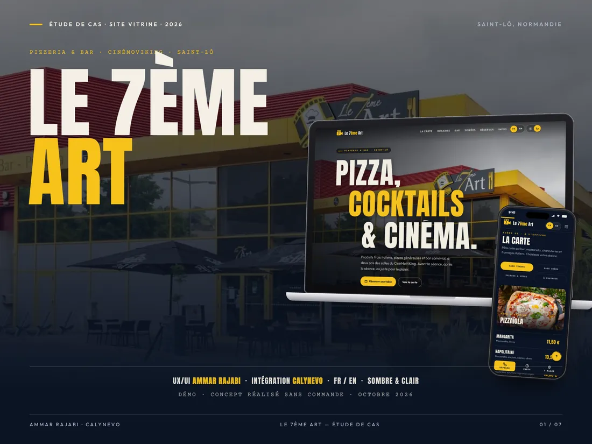
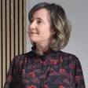
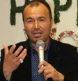
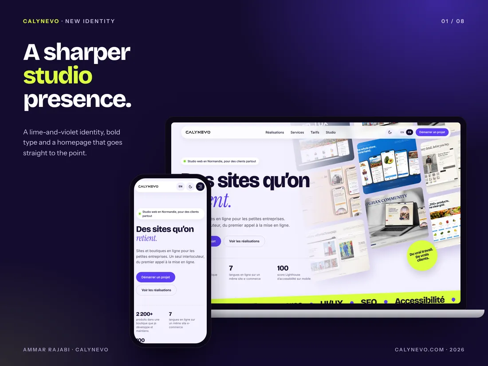

01 / 06 Concept demoBistro-bar · Saint-Lô
Le Central
A bistro-bar: the sign lights up, lunch and night in one button, and booking in four steps.
- ContextConcept demo, October 2026
- My roleUX/UI, front-end build, translation, local SEO

Open to a junior role in Normandy, hybrid or remote, and to freelance projects.
Ammar Rajabi · UI/UX & WordPress web designer
I design clear interfaces and build them on WordPress, WooCommerce and Wix. Level 6 professional qualification, based in Saint-Lô, France.
Selected work
Three recent demos for local businesses in Saint-Lô, then three real projects. All twelve projects are on the Work page.
01 / 06 Concept demoBistro-bar · Saint-Lô
A bistro-bar: the sign lights up, lunch and night in one button, and booking in four steps.

02 / 06 Presented demoBeauty studio · Saint-Lô
A women-only beauty studio: reassure first, show the results, then message on WhatsApp.

03 / 06 Concept demoPizzeria-bar · Saint-Lô
A pizzeria-bar next to the cinema: menu, opening hours and booking, at a glance.

04 / 06 Real projectE-commerce · Luxembourg
Contributing to the design, development and operation of a multilingual Wix store: 2,200+ products, 7 languages, B2C/B2B, automation and maintenance.

05 / 06 Real projectAssociation · Greece
A trilingual platform (French, English, Dari) for Afghans in Greece, from user research to the WordPress website and print materials.

06 / 06 Real projectOnline store · France
Improving a live WooCommerce store without breaking existing journeys.
How I work
User journeys, wireframes and prototypes, designed mobile first.
Figmawireframesprototypesvisual identity
Clean integration, content the client can manage easily.
WordPressWooCommerceACFWix StoresHTMLCSS
Accessibility, performance and SEO checked before going live.
LighthouseWAVEHTML validationSEO
Testimonials
“We had an excellent and deeply satisfying experience working with CALYNEVO. The team is remarkably responsible, highly responsive and detail-oriented. Our website was delivered right on schedule. The highlight of their work is their outstanding support: whenever we encountered an issue with any section of the site, they assisted us with a professional, patient and friendly approach. I highly recommend working with CALYNEVO.”

“I visited your website and it is magnificent. I hope to be able to call on your experience and expertise for my project soon. Knowing you, your mindset and your sense of responsibility, I believe your company will soon become one of the leading web service providers.”
“Ammar worked with seriousness and autonomy on DressYourBody. He fixed bugs, improved the site’s stability and made the experience clearer. He also taught me useful basics so I can manage the site more easily.”

“Ammar understood our community’s needs and turned them into a clear, structured and accessible platform. His work on UX, content, mobile and visual consistency made the project more professional and more useful.”

Some testimonials are translated from their original language.
Journey
Before the web, I worked as a translator and mediator. Understanding people and making information clear is still at the heart of my UI/UX and web integration work today.
My studio
For focused web projects, alongside my job search.
Independent studio
My own business for companies that need a WordPress website, an online store or a clear interface. This portfolio presents my profile; CALYNEVO presents my services.

Contact
I reply in English or French, usually within 48 hours.